Backstop
Backstop
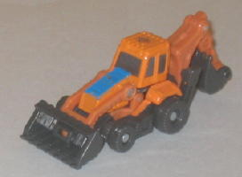 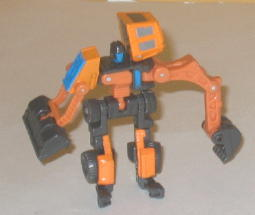
Team : Landslide Minicon Team
Difficulty of Transformation : Very Easy
Color Scheme : Orange, dark dull brown, and some blue and dull silver
Individual Rating : 5.1
Armada
Series Minicon 12-pack (K-Mart Exclusive)
Allegiances
: Minicon
Size
: Mini-Con (12-pack is exclusive
to K-Mart, though some are single-packed and sold at Big Lots)
Set Price
: $20-25 U.S.
Series
: Armada
Overall Rating
: 6.0
(NOTE: All of the toys in this 12-pack are
repaints of Classics Minicons-- to thus, these reviews are not completely
reviews, and merely cover and changes made to the mold and/or color scheme.
For reviews on the molds themselves, see the reviews of the
Night
Rescue Team
, the
Clear Skies Team
, the
Demolition Team
, and the
Dirt
Digger Team
.)
 Backstop
Backstop
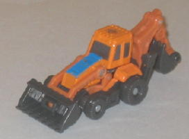
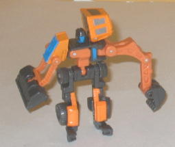
Team
: Landslide Minicon Team
Difficulty of Transformation
: Very
Easy
Color Scheme
: Orange, dark dull
brown, and some blue and dull silver
Individual Rating
: 5.1
Backstop has a much more
appropriate color scheme for a construction vehicle than his mold's previous
usage as Sledge. The orange and dull brown feel right at home on this type
of vehicle, whereas Sledge's tended to clash a little. The dull silver
windows also contrast nicely with the orange (as does the brown), and the
blue does as well. However, the blue doesn't really fit in with the other
colors, and looks a bit off on Backstop's otherwise realistic color scheme.
It's not used much and only as an accent color, though, so that's a small
quibble. Otherwise, Backstop beats Sledge hands-down.
No mold changes have
been made to Universe 2.0 Backstop.
 Blight
Blight
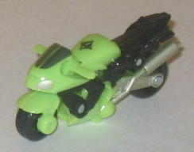
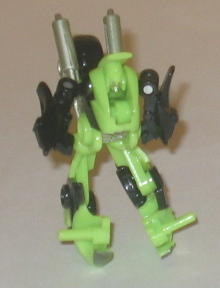
Team
: Overcast Minicon Team
Difficulty of Transformation
: Very
Easy
Color Scheme
: Black, bright light
green, and some silver and dark gunmetal gray
Individual Rating
: 3.4
Blight's color scheme
is similar to the mold's previous usage (Dirt Rocket) in that it's awfully
bright for a motorcycle, but unlike Dirt Rocket, he's not unreasonably
so. A bright green motorcycle would certainly catch the eye, but not as
much as a yellow-and-purple one. Plus, the black contrasts really well
with the bright green, and the silver in turn contrasts well with the black
(but not the bright green). The bright green still isn't all that hot of
a color and is rather loud, don't get me wrong, but I don't think it's
AS loud as Dirt Rocket's. Plus, bright green seems to work well with a
character called "Blight", regardless.
No mold changes have
been made to Universe 2.0 Blight.
 Bodyblock
Bodyblock
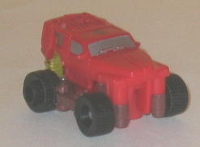
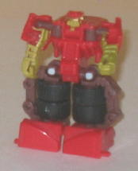
Team
: Landslide Minicon Team
Difficulty of Transformation
: Very
Easy
Color Scheme
: Red, dark brown, and
some silver, dull metallic mustard yellow, and black
Individual Rating
: 8.5
As opposed to this mold's
previous usage as Grindor, Bodyblock here has a bit more of a "traditional"
monster truck color scheme, being primarily brown with some brown and black
accents. All three of those colors go together quite well, though the odd
metallic mustard yellow accents on some of the robot mode bits don't look
too hot with the other colors. The silver painted windows also go well
with the red, though the vehicle mode needs a bit more paint apps overall,
like Grindor's "paint splatter" on the front of his hood. Still, overall
I think the colors are a bit more appropriate, so overall I'd rate Bodyblock
the same as Grindor. If you like red more get Bodyblock, if you like green
more, get Grindor. Simple as that.
No mold changes have
been made to Bodyblock.
 Boltflash
Boltflash
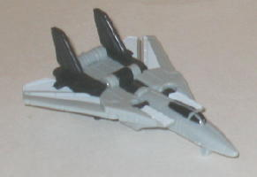
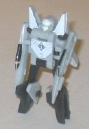
Team
: Ransack Minicon Team
Difficulty of Transformation
: Easy
Color Scheme
: Light gray, black,
white, and some bright green
Individual Rating
: 6.6
Boltflash here is a pretty
monochrome repaint. Light gray is his main color, with black and white
being the secondary colors. The placement of the colors looks good, and
the black contrasts quite nicely with the white and gray, though the gray
is a bit too light to in turn contrst with the white much. The green used
on Boltflash's visor in robot mode is a pretty nice accent color, though--
adding a bit more of that on the toy might have made it stand out a bit
more, but as it is it's rather boring-looking and comes in below this mold's
predecessor, Thunderwing.
No mold changes have
been made to Boltflash.
 Brimstone
Brimstone
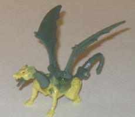
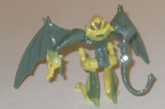
Team
: Overcast Minicon Team
Difficulty of Transformation
: Very
Easy
Color Scheme
: Dull dark jungle green,
pale mustard yellow, and some red, and jungle green
Individual Rating
: 5.5
It's rather interesting
that THIS usage of the mold is called Brimstone, while the previous usage,
named Nightscream, actually had a fiery color scheme that would fit this
name better. Regardless, Brimstone's color scheme isn't so much elemental
as it is just a more "realistic" lizard-y combination of dull yellow and
dark green. The two colors go together very well and there's isn't too
much of either color visible in either mode, despite Brimstone not having
too many paint applications. There's also a "middle" green that is used
to "ease" the transition from yellow to dark green in beast mode, which
is quite a nice touch and works well. The red eyes also look very nice
in both modes, and are again great contrast accents. Overall Brimstone
has an awesome color scheme, just barely surpassing Nightscream's more
fiery scheme, though Nightscream's certainly isn't bad, either.
No mold changes have
been made to Universe 2.0 Brimstone.
 Cloudraker
Cloudraker
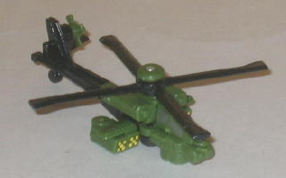
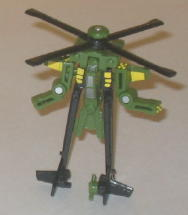
Team
: Ransack Minicon Team
Difficulty of Transformation
: Very
Easy
Color Scheme
: Black, dark green,
and some dark metallic silver and dull yellow
Individual Rating
: 3.8
Cloudraker's color scheme
is rather military-esque (granted, it has no camo job, but that's pretty
hard to do on a Minicon-sized figure like this). The colors used work extremely
well together-- the dark green and black contrast with each other very
well and the yellow-colored missile launchers are a great accent color.
The dark silver also works good as a cockpit color. Heck, I really have
no complaints about Cloudraker's color scheme other than it could use another
paint app or two-- it definitely ranks above this mold's former usage as
Divebomb.
No mold changes have
been made to Cloudraker.
 Flatfoot
Flatfoot
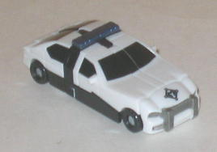
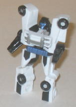
Team
: Safeguard Minicon Team
Difficulty of Transformation
: Easy
Color Scheme:
White, black, and
some dark metallic bluish silver and silver
Individual Rating
: 4.5
Flatfoot's a pretty cool
name for a police car, given that it's a nickname for a cop. Anyways, Flatfoot
has the "other" traditional take on a police car when compared to this
mold's previous use as Strongarm-- whereas Strongarm was traditionally
black, Flatfoot is a traditionally white police car with some black accents.
That's mostly all there is to his color scheme-- he's got some dark blue
on his sirens and robot face and a silver front bumper, but that's it--
but on this small of a toy, it works. If anything, Flatfoot has a more
"broken up" color scheme than Strongarm, due to him having painted windows
and a black bottom half of his police car mode. As such, even though I
don't think it's the best, most original color scheme ever, Flatfoot's
works and looks a little better than Strongarm, I think.
No mold changes have
been made to Flatfoot.
 Heavytread
Heavytread
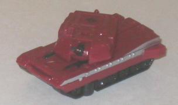
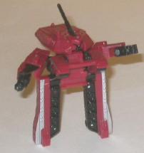
Team
: Safeguard Minicon Team
Difficulty of Transformation
: Easy
Color Scheme
: Dull maroon, black,
and some silver
Individual Rating
: 3.1
I don't know about you,
but I haven't seen very many maroon tanks running around. It's not a COMPLETELY
oddball color like, say, pink, but it still is a tad odd of a pick, Regardless,
the black and maroon go very well together, though there seriously needs
to be more black visible in vehicle mode to break apart all that maroon--
the two silver lines down the sides of the tank mode just don't cut it.
That's my main problem with Heavytread, right there-- he's got far too
few paint apps, and only the silver stripes aren't in his two base colors.
I'd recommend the first usage of this mold, Broadside, over this one, given
the more appropriate and varied colors on that one.
No mold changes have
been made to Heavytread.
 Knockdown
Knockdown
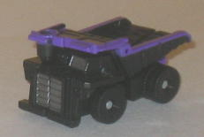
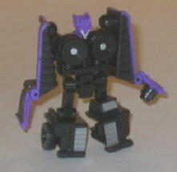
Team
: Landslide Minicon Team
Difficulty of Transformation
: Very
Easy
Color Scheme
: Black and some dull
silver and royal purple
Individual Rating
: 7.6
Knockdown's color scheme
of black and purple may not be as fitting on a dump truck as the mostly
green & black colors of this mold's previous usage as Wideload, but
that aside I think it looks quite a bit better overall. Black with purple
accents has always been one of my favorite color schemes of all Transformer-dom,
and Knockdown is certainly no exception (it's an odd color scheme for what
the package says is a "good" Minicon, though). The silver accents on the
front of the vehicle mode and the robot mode face also go great with the
color scheme, as well. However, all this said, Knockdown has WAY too few
paint apps-- the aforementioned silver paint apps and then the purple rim
outlining the top of his vehicle mode are pretty much it, leaving large
sections of his body just black, black, and more black. I still think Knockdown
looks a little better than Wideload, but not by as much of a margin as
he could have.
No mold changes have
been made to Universe 2.0 Knockdown.
 Makeshift
Makeshift
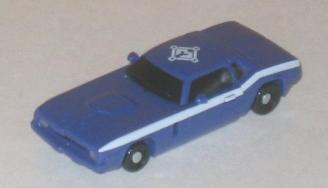
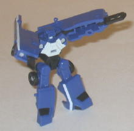
Team
: Safeguard Minicon Team
Difficulty of Transformation
: Very
Easy
Color Scheme
: Dull dark purplish
blue and some black, silver, and off-white
Individual Rating
: 8.4
Makeshift's color scheme
isn't exactly inappropriate for a car-- the dull blue and racing stripes
give him an old, worn out feeling, but not one that's inappropriate-- but
the more vibrant, louder color scheme of this mold's previous usage as
Oil Slick works a bit better, in my opinion. Normally I wouldn't say something
like that-- normally loud color schemes just don't work that well, if you
ask me-- but on an alt mode like a '70s-era muscle car, I think a loud,
unconventional color scheme works perfectly. Makeshift's is just so...
ordinary looking, it doesn't really take advantage of the alt mode. On
the plus side, though, unlike some other Minicons in this set, Makeshift
has an ample number of paint applications, including the aforementioned
racing stripes as well as painted windows and a nice off-white chest and
mouth that goes well against the dull blue.
No mold changes have
been made to Universe 2.0 Makeshift.
 Skyhammer
Skyhammer
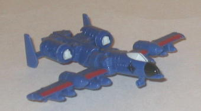
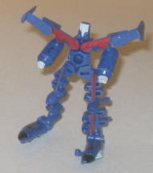
Team
: Ransack Minicon Team
Difficulty of Transformation
: Very
Easy
Color Scheme
: Dark pale blue and
some pale off-white, black, and dark glossy red
Individual Rating
: 7.4
Skyhammer's color scheme
is a bit less realistic than this mold's previous usage as Steel Wind.
However, that doesn't mean it still doesn't work fairly well on an A-10--
the dark red contrasts very well with the light blue. Not so much the black,
but it's really only used for the nosecone as an accent color. The off-white
also provides some very good contrast, but unfortunately the paint looks
a bit too "watery", if you know what I mean, meaning that you can sort
of see the blue plastic underneath the paint. Skyhammer could use a few
more paint apps, particularly on the rear end of his jet mode, but other
than that he looks pretty good, and more eye-catching than Steel Wind,
in my opinion.
No mold changes have
been made to Skyhammer.
 Suppressor
Suppressor
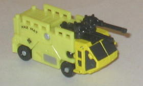
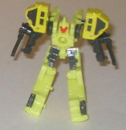
Team
: Overcast Minicon Team
Difficulty of Transformation
: Very
Easy
Color Scheme
: Dull pale yellow and
some black, light red, and silver
Individual Rating
: 8.2
Suppressor's yellow-and-black
color scheme puts the vehicle mode more in line with a hazmat-cleanup (as
is obvious from the big "Hazmat" symbol on his side) vehicle than a fire
emergency vehicle, which is what this mold's original usage as Firebot
was colored as. The two main colors contrast fairly nicely with each other,
and thankfully the yellow isn't a particularly bright shade, though I'm
not a huge fan of yellow as a main color in most cases, and this is no
different. The other two accent colors-- silver and red-- aren't bad colors
in and of themselves, but are too light to contrast with the yellow enough
to really make Suppressor stand out. I think Firebot is way better-looking
than this guy.
No mold changes have
been made to Suppressor.
The Armada Mini-con 12-pack is an awesome value for what you get, though the Classics Minicons molds are rather hit-or-miss, and same goes for the chosen colors used for these repaints-- some are better than their original paint jobs, some are roughly the same, and some are worse. If you like Minicons, this set is a no-brainer, and I'd also recommend the set for a "Transfan on a budget", given how many TFs you get for such a cheap price. Moreso than any release in the recent past, this set really is a decent-sized battle-in-a-box. Otherwise, you'll probably want to skip this set, value or no.
Review by Beastbot